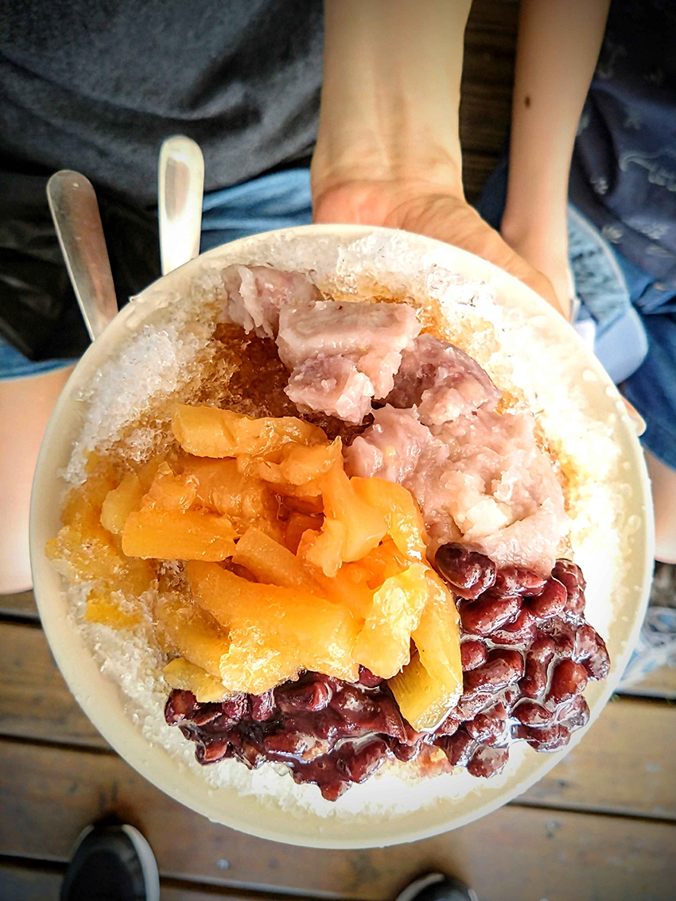

這次的親子行程比較屬於輕鬆玩樂之旅，2天的行程規劃如下：
Day1
10:00~12:00 驅車前往台中
12:00~13:00 審計新村午餐
13:00~16:00 審計新村文青市集逛逛
Day2
10:00~11:00 驅車前往大里異想樂園
11:00~12:00 異想樂園美食街午餐
12:00~16:00 異想樂園探索玩樂
16:00~17:00 紙箱王&科博館
第一天在上午從台北驅車前往台中，雖然是平日，但沿途車子在國道上仍然走走停停，應該都是趁著小朋友放暑假之際，全家一起出遊的車潮。我們開了約莫2個小時到達台中審計新村，到的時間剛好是午餐時間，於是我們在審計新村裡面挑選了一間越南菜色融合法式精緻料理的餐廳「八月寓所」，裡面的裝潢相當有越南餐廳的風味，讓你感覺就像是在越南當地餐廳用餐，老闆娘也是越南人，親自幫我們介紹了餐點特色後，我們點了椰香咖哩飯以及越南豬排香米飯4份套餐，餐點看起來色香味俱全，吃起來味道酸酸甜甜，很有異國的味道。
用完餐後，帶著家人逛逛審計新村裡面的文創市集，感受下文青氣息，由於台中的太陽太過熱情，大家沒一會兒就移動到冰室點了一碗冰享用（裡面的用料相當海派，且重點是很好吃），雖然店面位置不大，但在園區的好處是到處都有椅子，所以我們在戶外陰涼處找個可以休息的地方，吃吃冰消消暑氣，吃完了冰品，小朋友還想吃點心，於是乎就走著走著又到了一間當地小有名氣的「旅禾烘培坊」買了幾顆泡芙回飯店享用。
|  |
第二天一早在飯店享用了自助早餐，我們接著前往台中「大里異想世界」。約莫從台中西區開了半個多小時的車程到了目的地，開始進攻今天的玩樂行程，遊樂區裡面的設施非常多元化，有大小孩都可以玩到的遊戲，也有一些是探索體能的遊戲區，小朋友在裡面碰碰跳跳體能可以無限放電到極致，有點可惜的是沒有玩到卡丁車，因為在暑假期間人潮非常多，我們去的時間服務人員告訴我們已經預約到打烊時間，這次就只能扼腕的放棄這項遊戲，不過轉念一想，這次我們搭配的是飯店專案，拿到的是飯店和樂園合作的公關票，可以無限區不限次數暢玩，也算是另一種幸福。
結束了異想樂園的跑跳行程，我們前往出發到「科博館-紙箱王」用餐，台中西區的紙箱王位於科博館第三停車場B1，我們停好車沿著樓梯指示走到B1就看到紙箱王的招牌，由於抵達的時間已經是下午，我們選擇先用午餐，然後再來參觀。
這裡的午餐和擺設非常特別，從餐具、桌椅看到的所有都是用紙箱做的，我們點了紙火鍋和兒童分享餐，結果兒童餐來的是一台消防車裝著薯條，咖哩飯套餐，用餐完還可以帶回家當玩具。而且這裡的消費滿200元還送紙箱小火車免費搭乘一次，我們消費了1,000元，於是就換了5張票，讓小朋友體驗坐著紙箱火車，小火車搭完後，逛了一下店面商品，玩玩紙箱做的彈珠檯以及買一些手工紙做藝術品回家當紀念。
在離開台中前帶小孩去逛了一下「科博館」，參觀了1樓生命科學廳，從生命的起源開始介紹，一路介紹到植物演化，到生命從海底登上陸地，再到恐龍的誕生作為句點，2樓展區延續恐龍的展覽，介紹了在空中的霸主翼龍，以及哺乳類如何誕生和演化，靈長類演化到人類的轉變過程介紹，在這裡讓小朋友可以學習到除了從課本吸收到的知識外，可以藉由展覽和介紹活動對課外知識有更深一層的瞭解。
結束了科博館行程，時間也將近落日黃昏，我們慢慢的在科博館散步了一下，這趟知性玩樂旅程也劃下了句點。